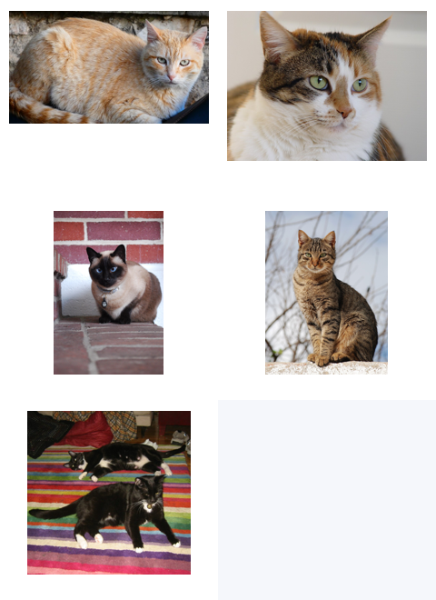
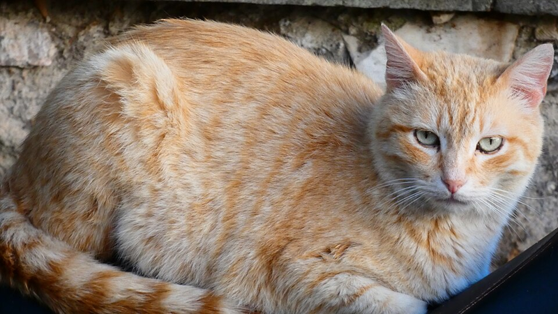
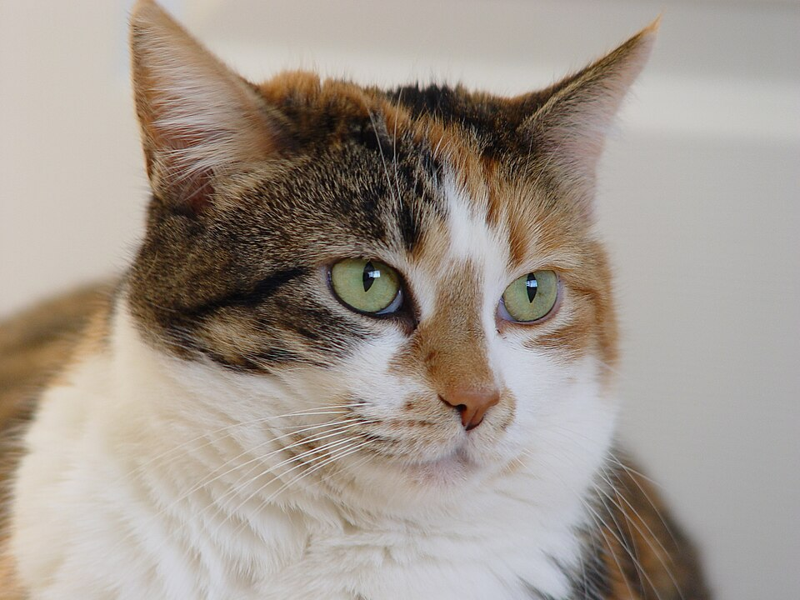
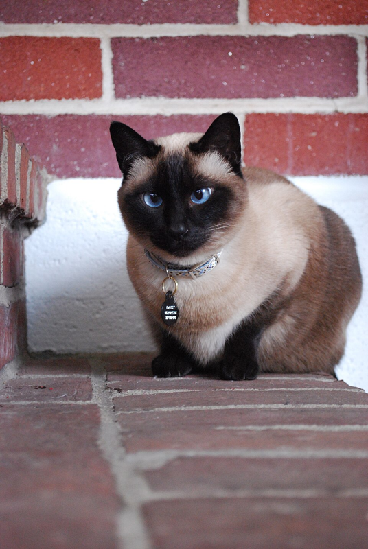
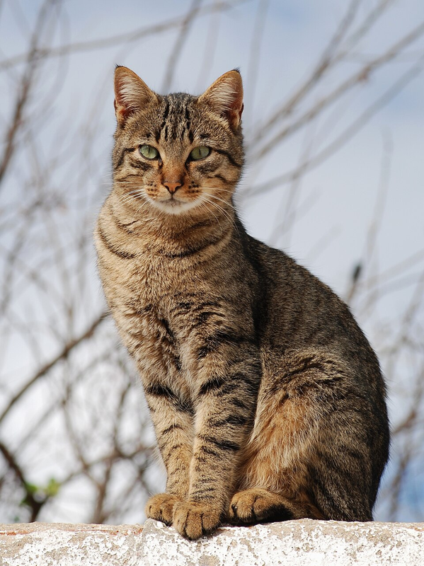
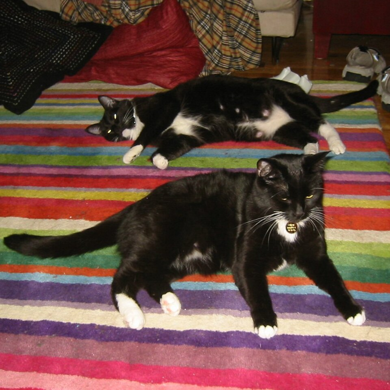

V33 外部猫图真实样本自动化验收
本报告从公开网页下载多张不同猫图片，生成去元数据缩略图证据，并验证当前项目能做什么、不能做什么。没有调用外部生成 provider。
目标架构与当前架构实现
目标架构
目标是单照片样本经过隐私边界、猫图适配性、身份锚点、动作候选、V30/V31/V32/V33 QA、预览、应用和回滚，最终形成高质量 2D 动作资产。
当前实现
当前已能对外部图片建立安全样本记录并发现多主体/身份不匹配风险；只有命名本地 frameSequence 候选可通过动作 QA 和产品闭环。不同猫照片尚不能自动生成各自高质量动作资产。
外部样本截图证据

以上 contact sheet 由脚本从公开网页缩略图重新保存为 PNG 后生成。
橘色猫公开样本

Intake: passed / sample_intake_passed
Source: Orange cat PHOTO.jpg
{kind=link}
License note: CC0 public domain dedication
三花虎斑公开样本

Intake: passed / sample_intake_passed
Source: Calico tabby cat - Savannah.jpg
{kind=link}
License note: Wikimedia Commons file license
暹罗猫公开样本

Intake: passed / sample_intake_passed
Source: Siamese Cat.JPG
{kind=link}
License note: CC BY 3.0
虎斑猫公开样本

Intake: passed / sample_intake_passed
Source: Cat November 2010-1a.jpg
{kind=link}
License note: CC BY-SA / GFDL on Wikimedia
source page includes camera location metadata; report uses stripped thumbnail only
燕尾服双猫公开样本

Intake: failed / insufficient_body_visibility, multi_subject, sample_failed
Source: Tuxedo cats.JPG
{kind=link}
License note: Wikimedia Commons file license
当前项目可体验路径
可通过路径
橘色样本记录 + 本地 quality-rescue-tabby-v1 候选：QA passed，preview ready，apply applied，rollback rolled_back。
不能通过路径
三花、暹罗、虎斑等不同身份样本直接套用同一个本地 tabby 候选会触发 identity_drift；双猫样本会因 multi_subject 失败。
跨样本身份验证结果
| 样本 | 身份门禁 | 原因 |
|---|---|---|
| web_orange_tabby_photo | passed | sample_intake_passed |
| web_calico_tabby_savannah | failed | identity_drift |
| web_siamese_cat | failed | identity_drift |
| web_featured_tabby_portugal | failed | identity_drift |
验收结论
| 外部样本数量 | 5 | 公开网页图片，去元数据缩略图入报告。 |
|---|---|---|
| 安全样本接入 | 4 passed / 1 failed / 0 blocked | 多主体样本按失败处理。 |
| 动作资产生成能力 | partial scoped | 当前未证明不同外部猫照片可自动生成各自高质量动作资产。 |
| 产品闭环 | passed scoped | 仅对命名本地 frameSequence 候选通过。 |